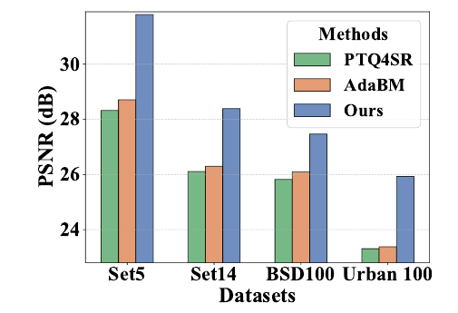
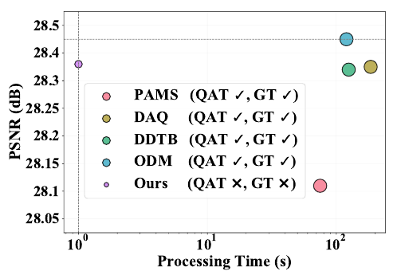
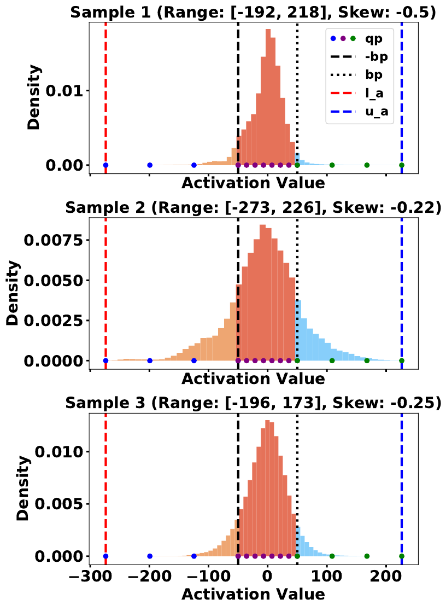
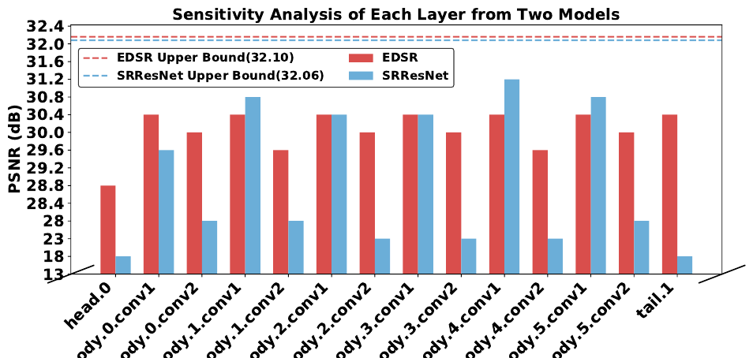

Northeastern University, USA · * corresponding author
Quantization is essential for deploying super-resolution networks on edge devices. Quantization-aware training (QAT) works well but needs ground truth and hours of retraining; post-training quantization (PTQ) needs neither, yet existing PTQ methods for SR lag far behind — because they overlook what happens to activation outliers.
Our empirical analysis reveals that activation outliers are strongly correlated with image colour information: removing them causes visible colour shifts and severe performance degradation. But retaining them naively consumes most of the available bit-width, starving the normal activations. We resolve this trade-off with a dual-region quantization strategy that partitions activations into an outlier region and a dense region and quantizes each independently. We further observe that different network layers vary widely in quantization sensitivity, and introduce a sensitivity-aware finetuning loss that focuses the optimization on the layers that matter. Extensive experiments show that our method outperforms existing PTQ approaches across SR networks and datasets, while matching QAT in most scenarios at a 75× speedup.


Clipping just 1 % of the activation outliers of a full-precision SR model — no quantization at all — already shifts the colours of the output, in both flat regions and detail-rich areas. Outliers are not noise; they encode image content that has to survive quantization.
Quantizing a single layer to 4 bit costs anywhere between 0.9 dB and 14 dB.
In SRResNet, head.0 drops from 32.06 dB to 18.26 dB,
while body.4.conv1 holds 31.20 dB. Spending equal
optimization effort on every layer is wasteful.

body.15.conv1) of EDSR. The bulk sits in a narrow dense region, but the outlier bounds swing from −192 to −273 across samples.
Pick a method and a scene. Hover the image for a 3× magnifier.
Comparison with PTQ methods under W4A4. Green marks the best value in each column and setting.
| Method | Set5 | Set14 | BSD100 | Urban100 |
|---|---|---|---|---|
| EDSR — W4A4 | ||||
| EDSR (32/32) | 32.10 | 28.58 | 27.56 | 26.04 |
| MSE | 27.74 | 26.03 | 25.95 | 23.63 |
| MinMax | 26.83 | 25.04 | 24.57 | 23.12 |
| Percentile | 24.03 | 23.95 | 24.42 | 21.62 |
| PTQ4SR | 30.51 | 27.62 | 26.88 | 24.92 |
| AdaBM | 31.02 | 27.87 | 26.91 | 25.11 |
| Ours | 31.54 | 28.26 | 27.36 | 25.61 |
| RDN — W4A4 | ||||
| RDN (32/32) | 32.24 | 28.67 | 27.63 | 26.29 |
| MSE | 25.55 | 24.33 | 24.49 | 21.75 |
| MinMax | 25.91 | 24.22 | 24.29 | 22.24 |
| Percentile | 18.83 | 18.28 | 19.83 | 16.77 |
| PTQ4SR | 28.32 | 26.11 | 25.82 | 23.31 |
| AdaBM | 28.71 | 26.30 | 26.10 | 23.38 |
| Ours | 31.80 | 28.39 | 27.47 | 25.93 |
| EDSR — W6A6 | ||||
| PTQ4SR | 31.80 | 28.26 | 27.37 | 25.72 |
| AdaBM | 31.92 | 28.47 | 27.47 | 25.89 |
| Ours | 32.03 | 28.55 | 27.54 | 25.99 |
EDSR, W4A4. QAT baselines retrain the network with ground-truth supervision; ours does neither.
| Method | QAT | GT | Time | Set5 | Set14 | BSD100 | Urban100 |
|---|---|---|---|---|---|---|---|
| EDSR (32/32) | – | ✓ | – | 32.10 | 28.58 | 27.56 | 26.04 |
| PAMS | ✓ | ✓ | 75× | 31.59 | 28.20 | 27.32 | 25.32 |
| DAQ | ✓ | ✓ | 185× | 31.85 | 28.38 | 27.42 | 25.73 |
| DDTB | ✓ | ✓ | 125× | 31.85 | 28.39 | 27.44 | 25.69 |
| ODM | ✓ | ✓ | 120× | 32.00 | 28.47 | 27.51 | 25.80 |
| Ours | ✗ | ✗ | 1× | 31.79 | 28.40 | 27.45 | 25.75 |
EDSR under W4A4. PLQ = piecewise linear quantizer, SAFT = sensitivity-aware finetuning, VFT = vanilla finetuning.
| PLQ | SAFT | VFT | Set5 | Set14 | BSD100 | Urban100 |
|---|---|---|---|---|---|---|
| ✗ | ✗ | ✗ | 26.83 | 25.04 | 24.57 | 23.12 |
| ✓ | ✗ | ✗ | 30.50 | 27.71 | 27.03 | 25.12 |
| ✓ | ✗ | ✓ | 29.45 | 26.95 | 26.27 | 24.40 |
| ✓ | ✓ | ✗ | 29.87 | 27.24 | 26.55 | 24.57 |
| ✓ | ✓ | ✓ | 31.54 | 28.26 | 27.36 | 25.61 |
PLQ alone lifts the MinMax baseline by 3.67 / 2.67 / 2.46 / 2.00 dB. Vanilla finetuning hurts relative to sensitivity-aware finetuning — treating every layer the same way actively wastes the calibration budget.
@inproceedings{wang2025outlier,
title = {Outlier-Aware Post-Training Quantization for Image Super-Resolution},
author = {Wang, Hailing and Lu, Jianglin and Zhang, Yitian and Fu, Yun},
booktitle = {Proceedings of the IEEE/CVF International Conference on Computer Vision (ICCV)},
year = {2025}
}
Acknowledgements. Our implementation builds on AdaBM and EDSR-PyTorch, and the piecewise quantizer primitives follow PWLQ. We thank the authors for releasing their code.